先行者，後來者無數人前赴後繼，都與你同在。

Hongshan Academy of Sciences宏山科學院Wuling · Talos-II
WULING
ENDFIELD INDUSTRIES — FIELD TERMINAL KJR-01
SURVEY GRID 48 · DATUM TALOS-II
MIST INDEX 0.62 · VIS 3.4 KM
WULING · AIC PLAN · 息壤流動區
CAUTION — XIRANITE FLOW. KEEP CLEAR OF THE TIANSHI PILLAR ARRAY.
Endfield IndustriesKJR-01 · 鯨